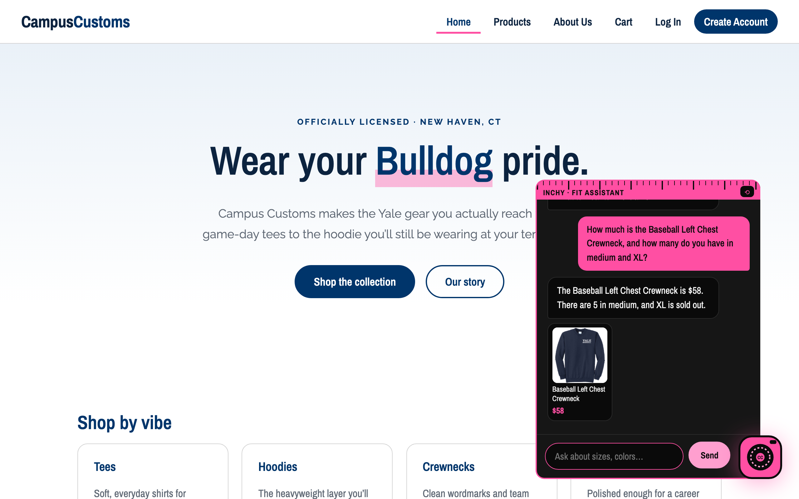
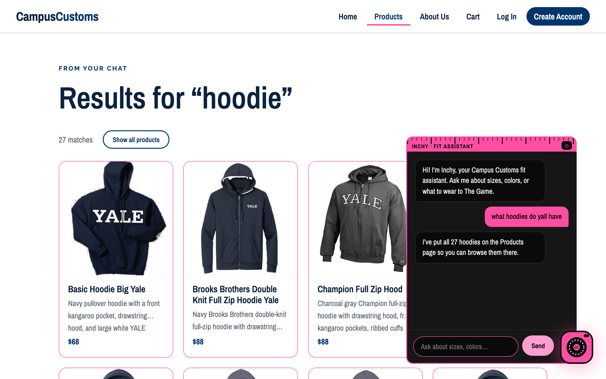
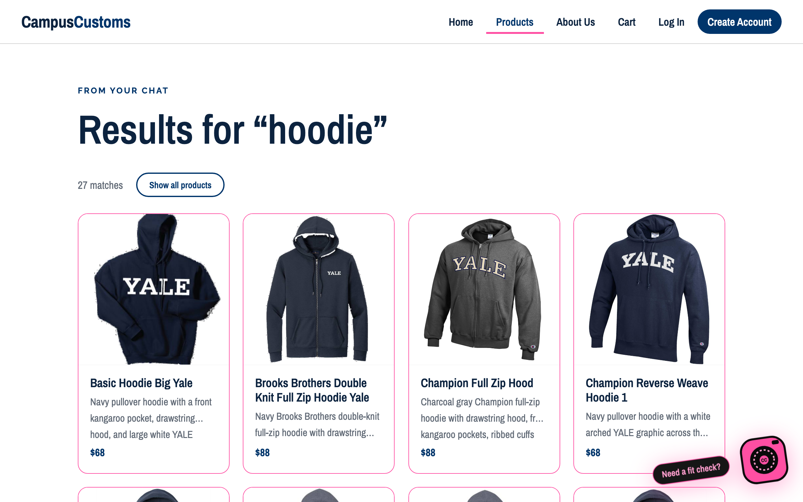
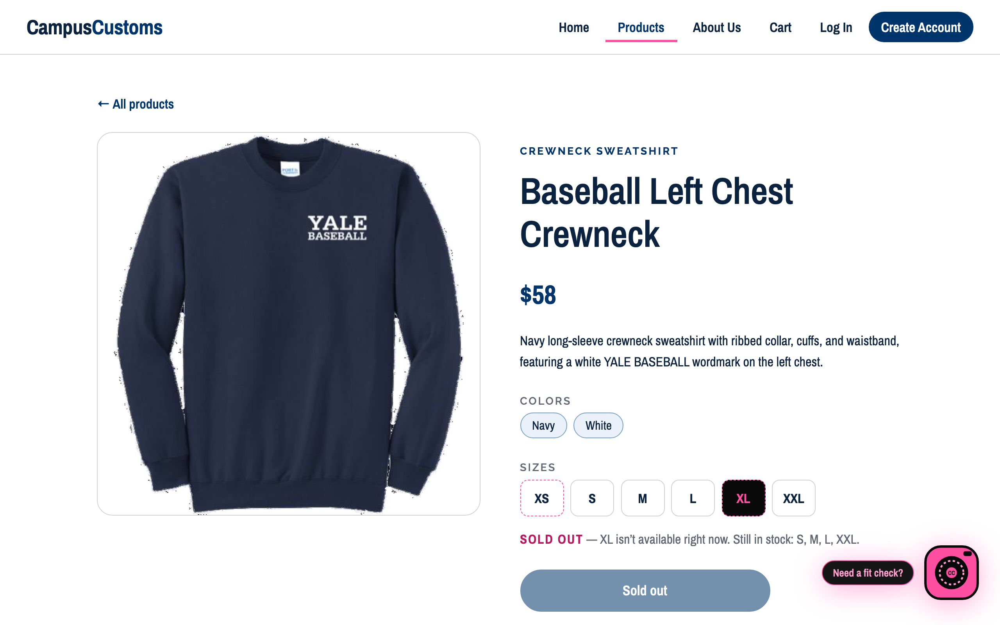

Summary
| # | Check | Result |
|---|---|---|
| 1 | Chat reports the real stock and price of an item | PASS |
| 2 | Asking about a category (hoodies) makes result cards appear on the page | PASS |
| 3 | Problem 9 feature: sold-out sizes stay clickable and show SOLD OUT | PASS |
Each check below has a heading, a screenshot, and what the screenshot proves. The “database says” lines are read straight from
campus_customs.db during the test, so the chatbot and the site can be compared with the real data.
Check 1 — Chat checks the stock and price of an item PASS

What this proves: the chatbot answers from the database, not from guesswork. It gave the price ($58), the exact number in stock for a medium (5), and said the XL is sold out, all matching the database below.
Question typed in the chat: How much is the Baseball Left Chest Crewneck, and how many do you have in medium and XL?
Chatbot replied: The Baseball Left Chest Crewneck is $58. There are 5 in medium, and XL is sold out.
Database says (Baseball Left Chest Crewneck): price $58.00; stock by size: L = 25, M = 5, S = 15, XL = 0, XS = 0, XXL = 25.
Price matches: PASS · Medium quantity (5) matches: PASS · XL reported sold out (database: 0): PASS
Check 2 — Dynamic search: result cards appear after a category question PASS

What this proves (step 1): after the question “what hoodies do yall have”, typed while on the About page, the agent searched the catalogue and the site took the shopper to the Products page by itself. The chat reply points to the results.

What this proves (step 2): the page now shows “Results for “hoodie”” with 27 product cards (image, name, short description, price). The database has 27 hoodie-type products, so the count is exact.
Question typed in the chat: what hoodies do yall have
Chatbot replied: I’ve put all 27 hoodies on the Products page so you can browse them there.
Page after the question: /products · heading “Results for “hoodie”” · banner “27 matches Show all products”
Cards shown: 27 · hoodie-type products in the database: 27 · counts match: PASS · clicking the first card opens its detail page: PASS
Check 3 — Problem 9 usability feature: sold-out sizes stay clickable PASS

What this proves: the sold-out size (XL) is a normal clickable button with a dashed outline. Clicking it shows “SOLD OUT” in the text under the sizes, and the cart button becomes a disabled “Sold out” so it can’t be added.
Text under the sizes after clicking XL: SOLD OUT — XL isn’t available right now. Still in stock: S, M, L, XXL.
Cart button: “Sold out” (disabled: True) · Cart in the nav bar: “Cart” (nothing added)
Database says sold out (quantity 0) for this item: XL, XS. Sizes the page marked with a dashed outline: XS, XL. Every size button is clickable: PASS · the page matches the database: PASS